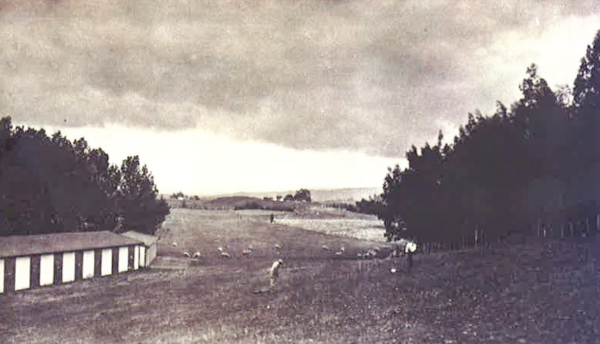
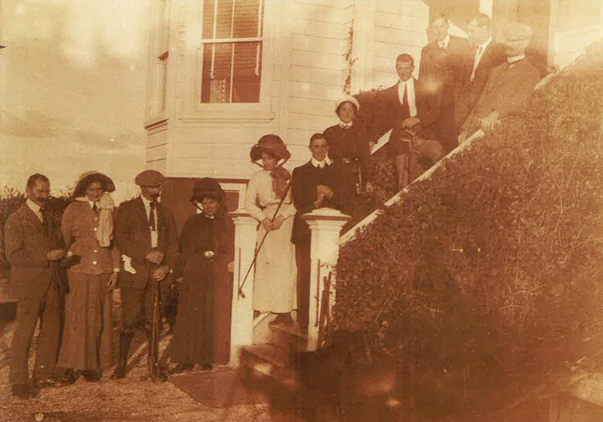
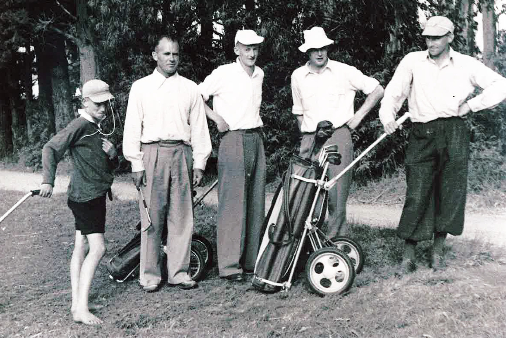
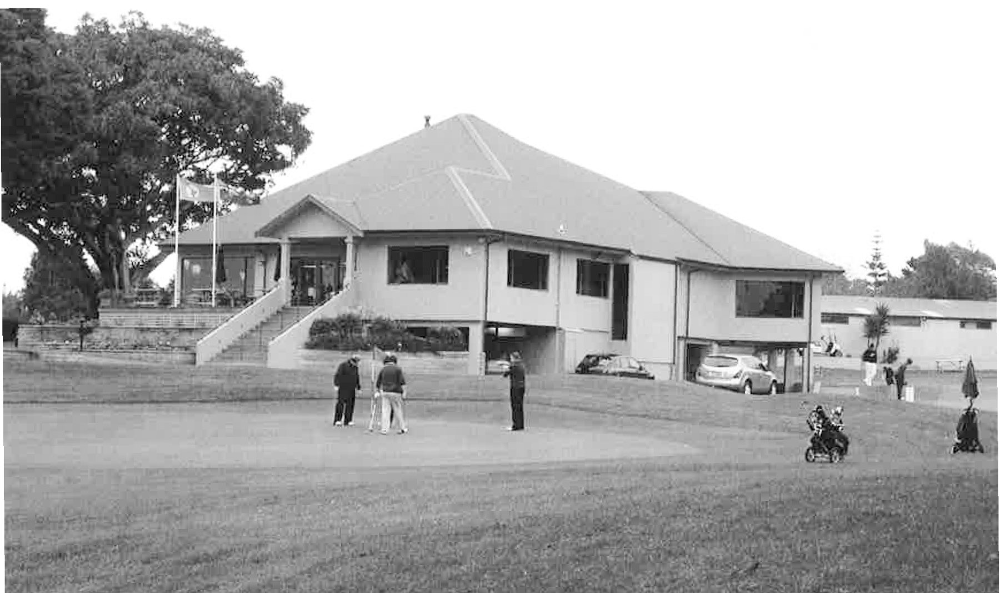
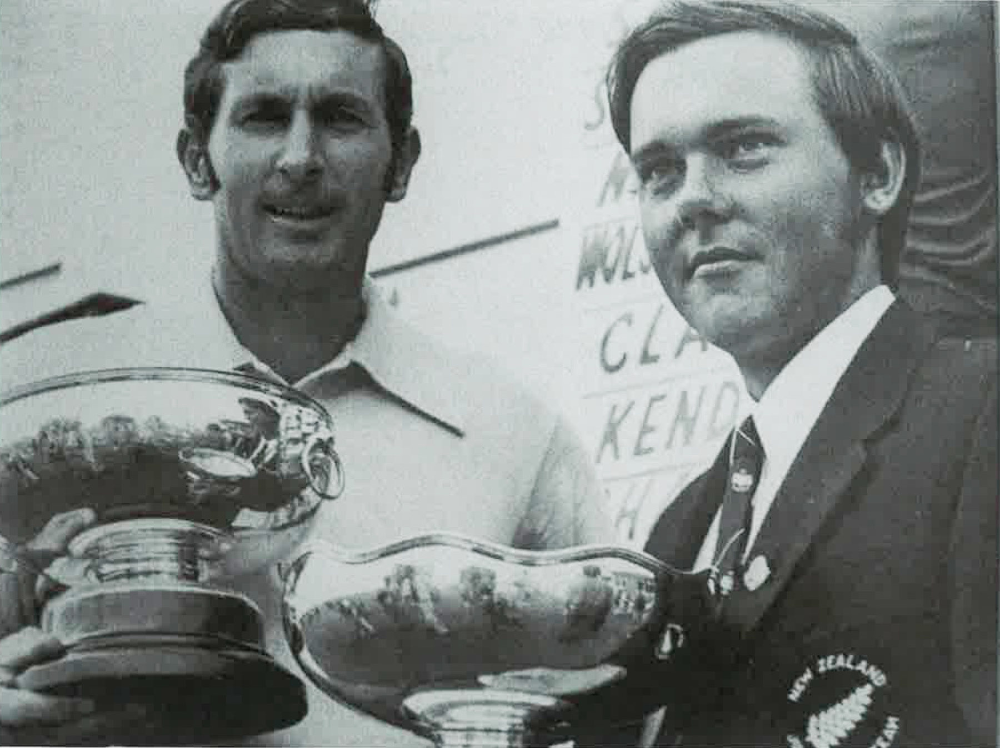

Members establish Gate Pa
Working bees cleared gorse, protected greens with fences, built stiles, planted trees and prepared greens. The tin shed, shared meals and collected firewood show the practical beginnings of club life.
The work, gifts and shared spirit that built the club: on the course, behind the scenes and across generations.
Read the story of service and generosity →
Eight themes bring together 37 accounts from across the book and the 1968 programme. Original pages retain their full detail, names and context.
Working bees cleared gorse, protected greens with fences, built stiles, planted trees and prepared greens. The tin shed, shared meals and collected firewood show the practical beginnings of club life.
The women’s committee cleaned the shed and prepared food at home for visiting teams. Anne Mark recalled finding kindling and cutting firewood; Elsie Hanna’s catering work involved heating water outside and using small spirit burners.
Book p. 26 Text view · Book p. 94 Text view · Book p. 97 Text view · Book p. 98 Text view
Groups of bankers, commercial travellers, Loan and Mercantile staff and insurance brokers undertook to enlarge and remake greens. These are early examples of professional networks contributing practical work.
Arthur Towsey’s long committee service and voluntary care of the bar formed part of the welcome members and visitors received.
Mowat dates the routine annual projects programme to 1985 while recognising earlier individual contributions. Peter Steward’s album preserved the Society’s activities through calligraphy, photographs and painstaking retrospective work.
Work in 1985–87 included painting club rooms and shelters, maintaining ball washers, rebuilding first-tee surrounds, replacing bunker rakes and assisting with coring. Walter Tombleson and Peter Baveystock are remembered for regular coring help.
The 1988–91 lists include a Toro mower blade attachment, bark gardens, paths, tee surrounds, drainage, fences, markers and storm-damaged trees.
Projects in 1992–95 included steps and paths, Vets’ Dell, bunker work, course furniture, practice nets and assistance with the new irrigation system.
Under President Ron Holden, the Society supplied materials, designed and built a caddie-car shed adjoining the greenkeeper’s building beside the practice range.
Later 1990s work included a mower roller, stormwater channels, paths and railings, irrigator equipment, a sliding sand-bin roof and care of gardens and car-park markings. Longrun Industries gifted cladding used in the clubhouse fascia.
Contributions included $6,000 for paths in 2000, $4,500 towards an irrigator and junior golf in 2001, and $12,000 in 2002, all but $400 of the latter coming from the firewood team. Joe Carr did the woodworking for a lectern funded in 2004.
Projects included course tidying for Carrus, coring, practice-net renovation, paths supervised by Denis Smith with planning by Peter Bourne, and turf-nursery support. Veterans helped lay Windsor Green stolons on the eighteenth and nursery.
Mowat associates the emergence of the Wednesday Firewood Gang with the mid-1990s project lists; he does not give a settled foundation date. The group also became known as Dad’s Army.
Removing dead trees, trimming, clearing fallen branches, providing clubhouse firewood and selling wood combined cost savings with funds for projects. The book does not assign a total lifetime value to this work.
Jim Swainson’s tree-care skills and Bernie Child’s project organisation, equipment design and maintenance receive special recognition. Child’s drinking fountain behind the first tee was his own initiative and work.
Book p. 65 Text view · Book p. 130 Text view · Book p. 190 Text view
Planting and care involved A. J. Mirrielees, Harry and Maurice Bradmore, Fred Washer, Frank and Maisie Warnes and Willis Faulds. Bill Kennedy donated specimens despite not being a golfer; Bob Burstall contributed specialist tree knowledge.
Book p. 62 Text view · Book p. 97 Text view · Book p. 189 Text view · Book p. 190 Text view
The book distinguishes relief workers, paid backpackers used in turf planting and contracted arboriculture from volunteering. It also says some clubhouse advisers were paid for professional services while donating meeting and site-visit time.
Book p. 158 Text view · Book p. 187 Text view · Book p. 189 Text view · Book p. 190 Text view
Their work linked catering, handicapping, committee service and leadership. Nen’s contribution also included communication through the Bunkered newspaper column and development of the club’s social life.
Book p. 94 Text view · Book p. 97 Text view · Book p. 98 Text view
Raffles, donated prizes, tournament organisation and sponsorship generated money for club facilities. The account records changing-room support, planter-box funding and a suggested handrail, as well as the work of successive committees.
Book p. 135 Text view · Book p. 136 Text view · Book p. 137 Text view · Book p. 138 Text view
After Connie Breeds stood down in 2010, Beryl Smith and Adrienne Coad volunteered to carry on the summer programme.
Hazel Casey and others helped women gain confidence and handicaps. Phyll Sandlant’s nine-hole initiative combined Rick Barker’s professional coaching with volunteers accompanying and encouraging the newcomers.
Book p. 105 Text view · Book p. 106 Text view · Book p. 107 Text view
Early twilight golf depended on willing organisers and a large catering team. Mowat gives particular recognition to Nen Sim, Joan Frith, Mavis Ward and Joyce Gallagher.
Noel and Peg Copestake and their colleagues managed starts, prizes, finances, cards, barbecues, bar service and cleaning. Named helpers include Joan Brown, Bruce and Marge Anderson, Ian Dale, Peter Heeney, Steve Stephens, John Robinson, David Mowat, Des Shiel and Noeline Shiel.
Gary Baker promoted business-house golf. David Mowat developed the twilight handicap system and software, while Peg and Kim Copestake checked and adjusted cards. The book credits the system with saving volunteer hours.
Early honorary secretaries and subscription collection sustained the club. John Hare’s honorary legal work helped the Racecourse Reserve arrangements. Later paid secretary-manager roles should not all be described as unpaid work.
Book p. 17 Text view · Book p. 22 Text view · Book p. 63 Text view · Book p. 148 Text view · Book p. 149 Text view
The men’s chapter profiles years of committee, finance, match and district service. Named contributors include Warwick Nicol, Alan Davidson, Keith Frith, Maurice White, Noel Copestake, Keith Dawkins, Ernie Craig and David Mowat, as well as others who were not life members.
Book p. 61 Text view · Book p. 62 Text view · Book p. 63 Text view · Book p. 64 Text view · Book p. 65 Text view · Book p. 66 Text view · Book p. 67 Text view · Book p. 68 Text view
Gary Baker and Tony Gallagher brought construction experience; Alan Rydings offered quantity-surveying and supervision help. Russell Black and Ismo Torvelainen were paid for professional services but also donated meeting and site-visit time. Member contractors won work through open tenders.
Book p. 158 Text view · Book p. 159 Text view · Book p. 160 Text view
Joan Mirrielees, later researchers, contributors of recollections and photographs, and Peter Steward’s veterans album preserved otherwise easily lost history. The book acknowledges veterans and the Volunteer Firewood Gang for helping finance its production.
Book p. 2 Text view · Book p. 5 Text view · Book p. 97 Text view · Book p. 128 Text view
Alan Davidson, Des Wilson, Jim Reid and Keith Frith gave up playing opportunities to prepare and check manually recorded results. Alex Gallagher’s calligraphy and coordination became a distinctive part of major tournaments.
The book uses an earlier disputed ruling to explain the value of trained referees, and records an enthusiastic core of qualified people following the introduction of courses in 1986. This is a historical account, not advice on present rules.
Beginners’ helpers, junior organisers and trophy donors provided pathways into golf. Ken Fraser donated the schoolboys’ Fraser Cup to encourage young players; eligibility and later administration are discussed in the book.
Book p. 105 Text view · Book p. 106 Text view · Book p. 107 Text view · Book p. 173 Text view · Book p. 174 Text view · Book p. 291 Text view
Local sponsorship supported the returning professional circuit. Mowat also records officials and volunteers using squeegees in difficult weather to try to keep play moving.
Noel Hayden’s acknowledgement credits the many volunteers who prepared the Masters and the advertisers whose support made the programme possible. Source: programme printed p. 48, PDF p. 50.
Ron Galloway, John McKenzie, Gavin Wallace, Johnny Walker, Ted Bartlett and David Collins supported tournaments with cups, plates, a rose bowl, an honours board, money and prizes. Dick Phelan, George Willcock and Frank Macklow also gave trophies.
Book p. 119 Text view · Book p. 120 Text view · Book p. 121 Text view · Book p. 123 Text view · Book p. 124 Text view
The book records gifts of trees, memorial seats and shelter, including Harry Butts’s seats for every tee, the Coates and Loughlin memorial seats and the shelter given in memory of Barbara Carlisle. Families and club groups helped make the grounds a place of remembrance.
The trophy histories connect gifts with competitions and the people they encouraged. They include Mae Cameron, E. T. Baker, Bill Darley, Warwick Nicoll, Harry Bradmore, Anne Mark, Elsie Hanna, Jean Cullen, Nen Sim, Phyll Sandlant, Hazel Casey and many more.
Book p. 298 Text view · Book p. 299 Text view · Book p. 300 Text view · Book p. 301 Text view · Book p. 302 Text view · Book p. 303 Text view · Book p. 304 Text view
Donated goods, sponsorship and commercially supplied services all supported club life in different ways. Their contributions should remain identifiable rather than assuming all business work was given free.
Book p. 120 Text view · Book p. 137 Text view · Book p. 138 Text view · Book p. 159 Text view · Book p. 260 Text view

The move to the Racecourse Reserve gave the club room to grow, but making a course took the work of its members.
Read the story →
Working bees, shared lunches and the seasonal rhythm of golf sustained the early club.
Read the story →Committee records show women shaping competition, fundraising and opportunities to play.
Read the story →A player and administrator whose contribution reached well beyond her own competitions.
Read the story →
The book recalls a debate over schoolboys’ championship eligibility and an early competition for schoolgirls.
Read the story →Tauranga played a pioneering role in nine-hole golf, with Phyll Sandlant helping turn an invitation to try the game into a substantial club group.
Read the story →Trees gave shelter and shape to the course, and many also carried personal memories.
Read the story →From Nen Sim’s election to a woman president, representation changed the club’s leadership.
Read the story →The move from a general committee to a Board introduced new responsibilities and a period of adjustment.
Read the story →
Planning, member expertise and a major financial commitment produced the clubhouse that opened in April 2001.
Read the story →Monthly golf, visits and shared lunches built another enduring part of club life.
Read the story →The Veterans’ contribution extended from friendly rounds to practical work around the course.
Read the story →Twilight golf brought together summer evenings, volunteers and a different route into the club.
Read the story →Behind every round lay the work of the greenkeepers and the changing science of turf care.
Read the story →
The Spalding Masters brought international visitors, large galleries and remarkable scoring to the course.
Read the story →Talent and encouragement gradually challenged the restrictions once placed on junior members.
Read the story →Converting the fairways to Windsor Green changed how the club managed summer playing conditions and its demand for water.
Read the story →Volunteers and benefactors supplied more than labour and money. Through repeated acts of service they helped make a club and a community.
Read the story →A profile of regional and club service. The January 1968 programme presents Hockin as still serving, whereas the book gives a 1967 retirement.
Shops, clothing, motels, dining, building trades and transport give the tournament a wider social setting. Inside-cover travel and appliance advertisements and the back cover add further context.